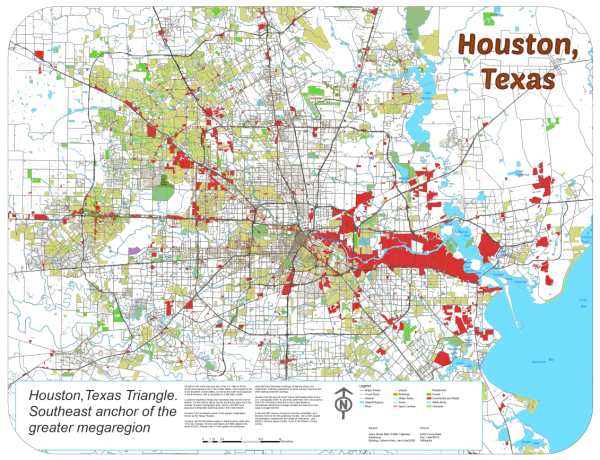
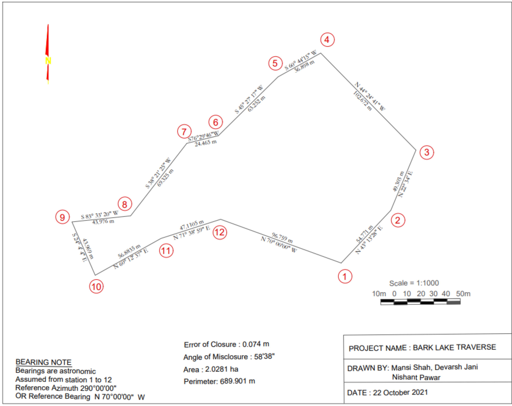
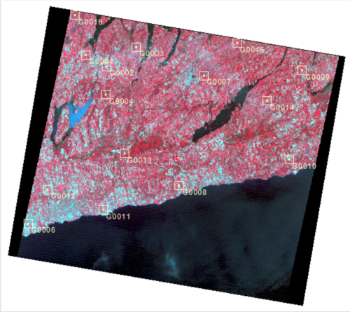

We have completed successfully a major and complex survey around Scugog river
for which drones were used for taking aerial images
and them final draft was prepared using AutoCAD Map 3d.
We even did a terrain survey and made contour map for that area using Total Stations and GIS techniques.
Raw data like Digital Elevation Model and LandUse were downloaded from USGS portal.
Houston City Map
Map of Houston city of Texas state, U.S.A made by one of the team member is published in the Journal of "Meteoritics and Planetary Science".
This map was made using ArcGIS Pro and Avenza MapPublisher along with Adobe Illustrator.
It shows the Land Use types, Streets hierarchy and Water bodies beautifully.

Bark Lake Traverse
Bark Lake Traverse survey was done by our very talented team members.
12 stations were considered and plotted on map using COGO tool of AutoCAD Map 3D.

Geometric Image Correction for Satellite Images
We have done many geometric corrections for the satellites data that we provide to our clients.
An example of this is shown below where this image has been corrected using Catalyst Professional PCI Geomatica software using Ground Control Points.
We provide corrected data to our clients on their demand.

Model Building in ArcGIS Pro
We have made many models in ArcGIS Pro for the analysis of the spatial data.
An example of such model building is here where we had to show the each post office's nearest households for Austin in U.S.A.
Spatial Join tool was used to achieve this success.